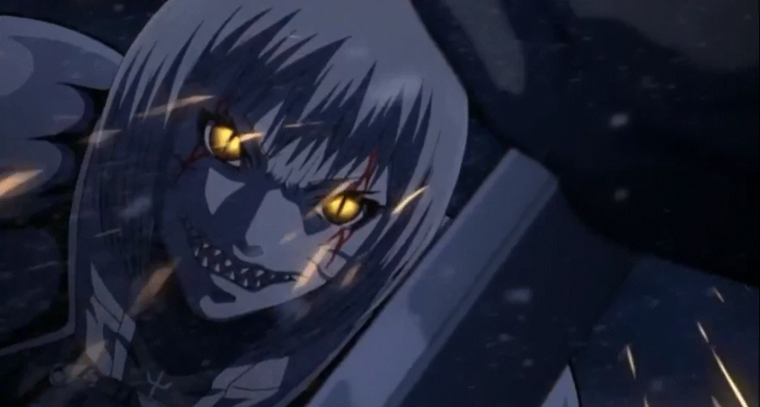

1. The moment the eyes turn gold
Clare, the lead in Claymore, is a half-human half-yoma fighter who boosts her combat power by drawing on yoki. When a fight against a yoma or an Awakened Being pushes her to her limit, she opens that thing inside her a little further. She knows exactly what percentage she has released, and she knows the line: past forty percent there is no coming back. She has already watched a comrade cross it mid-battle, so this is not a rumor to her. Her eyes go gold, her body swells and deforms, abilities she could not reach before switch on — and all of it is bought by losing her grip on herself, sliding toward the side that eats people. When the self collapses completely and only appetite is left, she becomes an Awakened Being. Those are the things that rule the lesser yoma and stand as humanity's enemy.

That is the whole skeleton of the series. Nearly every event in it reduces to one decision: raise the release level, or don't. Wins and losses fall out of that choice, and a character's fate is decided by when they crossed the line.
2. The percentage works as an instrument panel
The tension here doesn't come from how strong the enemy is. It comes from where the needle sits. Clare knows her own state as a number and the reader reads the same number, so a fight scene stops being about winning and becomes about where she can stop. The harder the fight, the more she has to open; the more she opens, the less of her is left to come back to. Victory and self-preservation eat each other by design.
The gauge also doubles as a way to line the characters up on different scales. The Organization ranks its warriors by number, and how far each of them can open and still return never quite matches that ranking. So "who is stronger" keeps collapsing into "who can stay human longer," and strength in this world is never a clean brag.
3. Why the price is specifically cannibalism
It is worth stopping on the fact that the price of opening up is eating people. You could build the same exchange rate out of memory loss, or years off a lifespan. This story picked the one thing no culture lets you off the hook for. Unlike killing, cannibalism comes with no room for justification, so there is no mitigating argument to be had.
That choice pushes the reader's feelings to maximum output without a word of explanation. What tightens in you as the release level climbs is not worry that she might lose — it's the sense that past a certain point she can no longer be counted as one of us. Forty percent carries weight because what lies beyond it is not defeat but a broken taboo. Parking the ones who did cross over in plain sight, as Awakened Beings, is how the story proves every week that the line is real.
4. The same taboo sits under the hatred
The taboo gets used a second time, as fuel. Without exception the main characters have walked through a scene where family or comrades were eaten in front of them, and that memory is set at the bottom of their will to fight in the shape of hatred. Clare picked up a sword out of a childhood dragged around by a yoma and the spot where she lost Teresa. Raki was left alone in a house where his brother turned and ate the family.
The hatred this produces is a different order from wanting revenge for a killing. Murder ends at taking a life; being eaten leaves no body, so there is nothing left to mourn over, and the fact that your family was counted as an animal's meal drags the survivors' standing down too. The reader climbs onto that anger without asking for reasons. That is what using a taboo as an amplifier looks like.
Because the reason to fight and the line not to cross are tied to the same taboo, the protagonist fights in a body capable of committing the very act she hates. That overlap is why every scene of raising the release level lands heavy, and it is where revenge and self-loathing fuse into one lump.
5. A one-quarter mix
How Clare's body was made hangs off the same event. The Organization's warriors are built by mixing in half yoma flesh and blood, so half-and-half is the standard. Clare was built with the flesh and blood of Teresa, who was already half — which leaves her only a quarter yoma. She got that way by gathering the corpse at the spot where the Awakened Being Priscilla killed Teresa and demanding it be implanted in her. The target of her revenge, the means of her revenge, and the composition of her own body all come out of a single event.
And that quarter is not setting trivia. It raises the ceiling of the story. Clare can pass through release levels other warriors cannot survive while keeping her personality intact, and the later fights happen up in the space that margin buys her. The grounds for redrawing the gauge's limit line for the protagonist alone were sourced from the event that started her revenge, so one event supplies both the origin of her hatred and the cap on her power.
6. So is this scheme Claymore's own?
That is one series, structurally. A release gauge, cannibalism as the price, hatred that starts from a scene of someone being eaten, a limit line tuned by a mixing ratio — they mesh into a single machine. It is tight enough to look like this work's own invention. Then you look at other works with the same eye.
7. The works that came after run the same machine
Attack on Titan takes one part — open up and you eat people — and expands it into the entire world setting. Titan shifting is the release, the intelligent titans are the upper-tier predators that Awakened Beings occupy, and the protagonist is marked for disposal by human society and titans alike. Nailing a scene of his mother being eaten to the starting point is the same part in the same slot.
Demon Slayer stamps numbers on the hierarchy, sorting everything from Upper Rank One down to Lower Rank Six, and lays a named technique list on top as Blood Demon Art. Nezuko is a half-demon holding down the urge to eat people while staying on the human side, and Tanjiro fights carrying both a butchered household and the threat that his one surviving sister might eat what the rest of the family became. A body that swings between release and restraint, a hierarchy of those who crossed over, hatred sourced from eaten family — all set down again, unchanged.
At this point it is hard to read as any one work's invention. A single template is being applied over and over. So where did the template start?
8. Tracing the template back
Going back part by part, there is a waypoint in 1989: Berserk. It stacks the upper hierarchy in layers with the Apostles and the God Hand, and turns the release of power into an object you hold — the Berserker armor. Wear it and you exceed human limits, while the beast sealed inside eats your consciousness bit by bit. The exchange rate between how much you open and how much self remains is fixed into a visible device. Claymore's percentage gauge is that armor converted into a number.
One step further down lands on Devilman, 1972, by Go Nagai. Akira Fudo fuses with the demon Amon and becomes Devilman, and from then on he lives as a half-demon driving a demon body with a human mind. Transformation is the act of opening that demonic power; opening it beats opponents no human could beat, and each time the human share shrinks while the urge to slaughter rises. The demon race is sorted into a hierarchy — rank and file, then higher individuals, then the ruler Zennon at the top — and at the end Akira is named a monster and hunted by the very humans he risked his life for. Every part we pulled out of Claymore is already here.
There was material before Devilman too. Osamu Tezuka's Vampires and Dororo put down the boundary between human and other, and the trade of handing over part of your body to get something. But neither has a gauge counting how far you have opened, nor a species hierarchy that gets stronger as you climb. Individual scenes hit hard, but it never becomes a machine you can keep running. Devilman is what you get when those two pieces are bolted on.
9. Not a Japanese-manga template either
Look outside with the same eye and the template is nobody's exclusive property. Werewolf lore is a story where the release is forced by a rising moon, people get torn apart, and only fragments of memory remain by morning. Dr Jekyll and Mr Hyde, 1886, moves the switch into the user's own hand in the form of a drug. Dracula, 1897, handles the taboo as blood-drinking and makes the slow crossing-over of the bitten the real body of the horror, with Mina held on the line while the story runs.
Zombie fiction fills the yoma slot exactly. What used to be human now eats people, a bite makes you one of them, and the horror comes from the fact that what has to be killed was a neighbor yesterday. Claymore's yoma living among villagers wearing human faces and a zombie walking up with a family member's face press the same spot. Most zombie stories leave the hierarchy and the gauge empty, though: the rank and file multiply without limit, but there is no upper tier to climb to and no scale measuring what margin is left. So the story drifts from one person's choice about opening up to a group's problem of managing survival.
The Dracula line is the same skeleton with the taboo softened into drinking. Drink instead of eat, and the victim survives and crosses over slowly, which lowers the intensity of the taboo and in exchange creates an ongoing relationship between the one who takes and the one taken from. That substitution is what lets vampire fiction layer seduction and romance on top, shedding much of the disgust and self-loathing the cannibalism line keeps to the end. Put the other way: Claymore and Demon Slayer leaving cannibalism in place is a refusal of that discount, a choice to keep the price of opening up heavy with no compromise.
Later Western popular fiction keeps reusing the same parts. The Hulk has anger as the release switch and loses self-control for the duration, unchanged. Blade is a half-vampire suppressing blood thirst with a serum, standing exactly where Nezuko stands. Underworld installs a hybrid of two species as the upper tier, and X-Men shows what becomes of someone who opens all the way with Dark Phoenix. The Lord of the Rings has the ring granting power while eroding the self, with Gollum parked in view as the one who went the distance — a gauge and an Awakened Being in one package. On the Korean side, Sweet Home makes desire the trigger for opening up and puts a body holding down its own monstering at the center.
What Japanese manga did was not invention but metering. The Western versions drew the release as an event; the Japanese ones scaled it into percentages and rank numbers, making a device that can be run again and again.
10. Marking off the lines that don't overlap
Not every story about handling power belongs to this template. In magic-school narratives power comes from bloodline, training and qualification, and the price is usually classes, exams and discipline. Harry Potter and the magical-girl line sit here, and getting stronger is drawn as a procedure of learning and being recognized. There is no gauge whose needle moves you away from being human, and no slot for parking someone who opened all the way as an upper-tier predator. Even when a villain shows up as someone fallen, the fall comes from the direction of their choices, not from how much power they used.
That contrast sharpens the boundary. The core of the line this piece is tracing is the equation that getting stronger is itself contamination. Without that equation, no amount of intricate power hierarchy puts a story in this family.
11. Versions that swapped the skin for genes and viruses
Versions dressing the same template in science are too many to count. Put gene modification or a serum injection where the yoma flesh graft was, put viral infection where the curse was, and the conversion is done. Resident Evil has an infected protagonist fighting with powers beyond human while carrying the risk of crossing over, with experimental subjects stacked up as higher predators. The Last of Us centers a body that is infected and does not cross over, and grades its monsters by how far the infection has progressed. 28 Days Later wires infection straight into an emotion, rage. Captain America, Wolverine and Spider-Man place enhancement procedures and genetic accidents at the origin of the release. Tokyo Ghoul and Parasyte keep the cannibalism line intact while adding biology and an oversight agency.
Swapping the skin for science brings two things in with it. First, responsibility for that body now belongs to the institution that ran the experiment rather than to a curse or a bloodline, so labs, militaries and pharmaceutical companies get added to the list of things to fight. The lab coat takes over the job Claymore's Organization was doing. Second, a cure-and-vaccine axis opens up, so "can the release be undone" can become the story's goal. In the curse versions there is usually no way back, so the question never arises.
The science skin also lowers the cost of getting the reader to accept the setup. Explain where the power came from with a virus and some genetics and it reads as though plausible grounds now exist, which frees the author to lay the gauges and hierarchies in even finer detail. Whether the explanation is actually science has no effect on how the story runs; all it needs is the sense that release and price are being exchanged.
The Alien series, viewed from one angle, is assembled from the same parts. Something planted inside a body, growing, then tearing the host open is the scene of a human counted as monster raw material. Xenomorphs with a Queen above them is the same rank and file plus higher individual. The company that wants to study the creature and turn it into a weapon shows up as the real threat on the human side, so the arrangement where an agency treats the protagonist as disposable is there too. And in the fourth film Ripley comes back as a clone carrying alien genes, gaining a body beyond human and a channel to the other species at once — at that point she stands precisely in the half-human slot.
What's missing is the gauge. Ripley never chooses what percentage of what's in her to open; she lives in an already-mixed body and keeps asking whether she is human. With the decision to trade release against price left out, the series uses the same material for horror and identity, while the Claymore line uses it for choice and combat.
12. A case of one franchise switching lines
Magical Girl Lyrical Nanoha belongs, in its main line, to magic-school narrative. The 2026 entry, Magical Girl Lyrical Nanoha EXCEEDS Gun Blaze Vengeance, moves the whole arrangement over to this template. Invasive species that appeared thirty years ago nearly destroyed the world and now contest living space with humanity, and the UN's dangerous-organism investigation agency EXCEEDS handles extermination duty. The franchise's existing cast has stepped back into supporting roles as members of that agency, and the body of the story has moved to a setting about Majin — people injected with the abilities of the invasive species. The lead, Kuze Shiina, is an invasive species exterminator on a remote island who wants to live quietly with her one remaining family member, her younger sister Setsuna.
Line the parts up and not one is empty. A body injected with invasive species ability takes the half-human slot, an international agency takes over the management and dispatch Claymore's Organization handled, and a fighter with exactly one family member left doubles as the Raki material. The antagonist is a girl who has kept ratcheting up her own abilities by eating Majin enhanced in a lab — which puts cannibalism into the Awakened Being slot as the direct means of acquiring power. What was a consequence of eating people in Claymore has been moved forward into a procedure for getting stronger, and the science skin of the laboratory merges with the eat-your-way-up hierarchy inside a single character.
Both the eater and the eaten being artificially made bodies is this version's other distinguishing mark. The question of who the monster is shifts from a matter of species to a matter of the institution that designed those bodies, and the transfer of responsibility the science skin drags in becomes a structural axis here. The work is unfinished, so how the exchange rate between release and price finally settles is not something to rule on yet.
13. Why this structure works in fantasy
Overlay the shapes that recur across these works and a common structure appears. First, the protagonist's body contains the same substance as the enemy, so the means of beating the enemy and the risk of becoming one come out of the same organ. Second, how much of that substance is in use is presented on a visible scale, so the reader counts the remaining margin directly. Third, the price is set on the far side of a taboo, so crossing over weighs more than losing. Fourth, those who crossed all the way are stationed in view as a superior faction, proving the line exists. Fifth, the protagonist reads as a monster even to the side being protected, so no side fully holds them.
Three things make it work in fantasy. The conflict has moved from outside to inside, so killing every enemy does not end the problem, which means repeated battles don't exhaust the tension. The total amount of power is pinned to a number or an object, so every time an author raises strength to move the plot, a price has to be paid alongside it, and the setting's runaway inflation and collapse keep themselves in check. And the decision to trade power against price is made by the protagonist each time, which puts the reader not in the seat of a spectator but on the other side of the scale.
The last item explains the template's lifespan. One day a power you did not make rises inside your body; using it lets you do what you could not do before, and erases that much of who you were; adults try to manage it and grade it, peers hold the same power and are afraid of you anyway. How far to open it is something you end up deciding alone, every time. The percentage Clare counts is therefore not a metaphor but an instrument panel, and the reader has already watched that same needle move in their own body before anyone explained it.